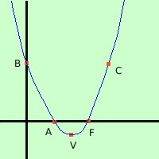

|
Rappresentare graficamente la parabola di equazione y = x2 - 3x + 2 1) Troviamo le coordinate del vertice abbiamo a = 1 b = -3 c = 2 Calcoliamo la coordinata x del vertice: Vx
Calcoliamo la coordinata y del vertice: Vy
V = (3/2; -1/4) 2) troviamo l'intersezione D con l'asse y e' sufficiente prendere come prima coordinata 0 e come seconda coordinata il termine noto della parabola D = B = (0; 2) 3) troviamo le intersezioni E ed F con l'asse x, se esistono Devo fare il sistema fra la parabola e l'equazione dell'asse x (y=0) y = 0 sostituisco y = 0 ottengo le soluzioni calcoli 
Ora devo mettere i punti in un sistema di assi cartesiani e tracciarne la congiungente ricordando che il vertice e' sempre il punto di massimo o di minimo della curva (vuol dire che sul vertice devo fare la conca) Il disegnare la parabola puo' servirti per vedere se hai fatto giusto: prova a disegnare i punti che avevi all'inizio dell'esercizio e controlla che siano sulla parabola |